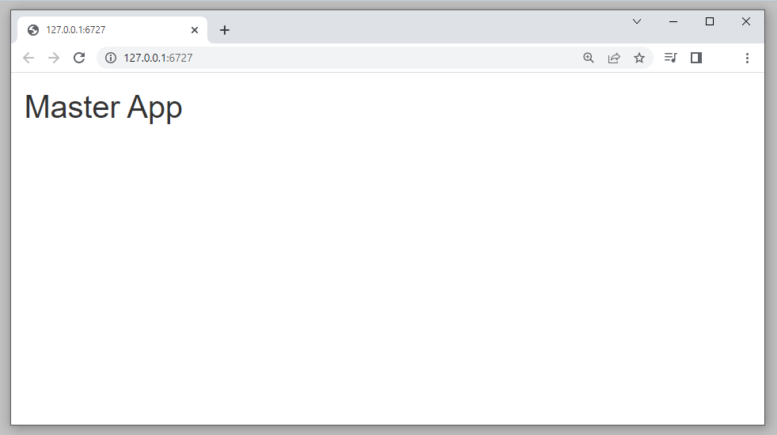
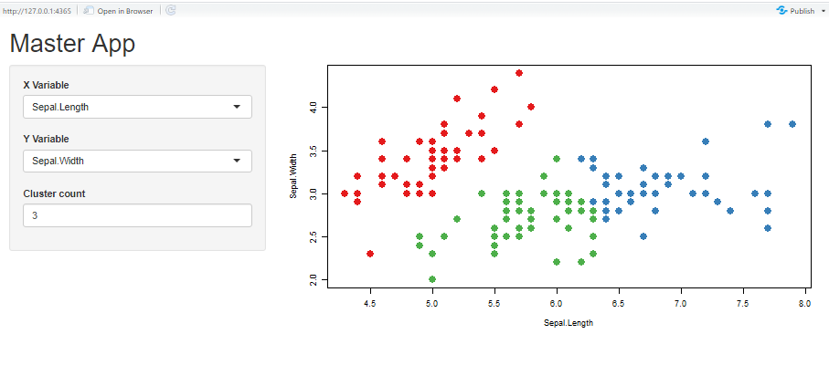

Introduction
Introduction
In the previous tutorial, you built a simple shiny app – the k-means cluster example provided at https://shiny.posit.co/r/gallery/start-simple/kmeans-example/.
The app allows a user to select two columns (X Variable and Y Variable) from the iris dataset, and clusters the dataset based on the selected variables into a user-specified number of clusters. The output is a scatterplot that shows the two variables by cluster. Here is the app in action (see also https://shiny.posit.co/r/gallery/start-simple/kmeans-example/).
Choose an X and Y variable from the iris dataframe, and select the number of clusters for grouping:
Iris k-means clustering
You might recall that the app’s code is a file with the name “app.R”, which contains two objects
- An object that is created by a UI generating function, such as
fluidPage(). For the iris cluster app, this object is called “iris_cluster_ui”. - A function (which is an object) that takes in inputs and does something to produce the app’s outputs. For the iris cluster app, this server function is called “iris_cluster_server”. In the next two sections, we’ll display the code used, just as a friendly reminder.
The UI function
The Shiny function, fluidPage(), generates the UI,
stored as an object called “iris_cluster_ui”. The sections in green
provide the “framing” of the app, establishing the sidebar layout where
user inputs are displayed in the sidebar panel, and the app outputs are
displayed in the main panel. The sections in red highlight the user
inputs and outputs.
# fill in the pageWithSidebar with input widgets
iris_cluster_ui <- fluidPage(
# add a title with the titlePanel function
titlePanel("Iris k-means clustering"),
# set up the page with a sidebar layout
sidebarLayout(
# add a sidebar panel to store user inputs
sidebarPanel( # add the dropdown for the X variable
selectInput(
inputId = "xcol",
label = "X Variable",
choices = c(
"Sepal.Length",
"Sepal.Width",
"Petal.Length",
"Petal.Width"),
selected = "Sepal.Length"
),
# add the dropdown for the Y variable
selectInput(
inputId = "ycol",
label = "Y Variable",
choices = c(
"Sepal.Length",
"Sepal.Width",
"Petal.Length",
"Petal.Width"),
selected = "Sepal.Width"
),
# add input to store cluster number
numericInput(
inputId = "clusters",
label = "Cluster count",
value = 3,
min = 1,
max = 9
) ), # end of sidebarPanel function # start the main panel
mainPanel( # add the scatterplot placeholder
plotOutput(
outputId = "plot1"
) ) # end of mainPanel function
) # end of sidebarLayout function
) # end of fluidPage functionRemember, each shiny input has a unique inputId argument. The name of the Id is provided by the user (e.g., “xcol”, “ycol”, and “clusters”). The value associated with each Id is controlled by the user’s selection. For example, if the user selects “Sepal.Length” for the X Variable, the input named “xcol” has a value of “Sepal.Length”. This information will be passed to the server function, where R code is used to turn inputs into outputs. The UI also includes space to hold outputs, which also have a unique outputId identifier (e.g. “plot1”)
The server function
The server function is named “iris_cluster_server”, and it will
accept the user’s inputs, run the k-means(), and return the
scatterplot. Here is the code:
# the server function
iris_cluster_server <- function(input, output){ # subset the iris data
selectedData <- reactive({
iris[, c(input$xcol, input$ycol)]
})
# run the kmeans clustering
clusters <- reactive({
kmeans(
x = selectedData(),
centers = input$clusters)
})
# produce the scatterplot
output$plot1 <- renderPlot({
par(mar = c(5.1, 4.1, 0, 1))
plot(
selectedData(),
col = clusters()$cluster,
pch = 20,
cex = 3)
})} # end of server functionThe R code that produces the plot is wrapped into a
renderPlot() function (which will render the output as
HTML), and this resulting value is stuffed into the
output$plot1 placeholder that we created in the user
interface (UI).
As this is stand-alone Shiny app, we can run the
shinyApp() function to launch our app, passing in the
iris_cluster_ui object (class shiny.tag.list) for the
UI, and our iris_cluster_server() function as the server
function:
shiny::shinyApp(
ui = iris_cluster_ui,
server = iris_cluster_server
)What is a module?
Now that we have built our first app (where the entire code is stored in a file called “app.R”), we are going to modify our approach so that the code is split into two files: the master app and a module. The file structure for this tutorial will soon look like shown below. The working directory will include a file called “app.R”, which is really the “master app”. This master app will call the module “iris_cluster.R”:
|-- working directory
| |-- app.R
| |-- iris_cluster.RA Shiny module is not a stand-alone app. Rather, it is a “self-contained, composable component of a Shiny app.” This bit of self-contained component can be summoned by the main (or master) app. It can even be summoned by another module!
A module is an R script that contains two items:
- A function that stores the UI (user interface)
- A function that loads the server logic (the R code needed to turn inputs into outputs)
👉🏿 Note: Throughout these tutorials, all module names are written with snake_case, such as iris_cluster. A module consists of a ui function such as
iris_cluster_ui(), and a server function such asiris_cluster_server().
Modules have some key benefits:
- Reuse: you can quickly reuse the same code in different apps, or
multiple times in the same app.
- Isolate: by dividing code into separate modules, you can reason about them independently. In other words, simplify the problem to a small, discrete Shiny component.
- Testing: unit tests can be written for each module, ensuring that external code does not affect the performance of the module itself.
As we’ll see in future tutorials, modules are at the heart of the shinymgr package.
The master app
To modularlize the iris cluster app, we will first create a “master”
Shiny app that acts as a shell, more or less, that can “summon” the iris
cluster module. This file will be named “app.R”, and will eventually
call our module. The UI (an object named UI) will be generated with the
fluidPage() function. We will add a level 1 header so that
our UI renders the words “Master App” and is not completely blank.
# create the UI with the fluidPage() function
UI <- fluidPage(
# add a level 1 header
h1("Master App")
# nothing more!
) # end of fluidPageWe now have an UI. Now let’s write the server function (a function named SF):
# create the R server function
SF <- function(input, output){
# nothing more!
} # end of server function👉🏻 Save this master as “app.R”. Don’t forget this is the master app!
Now, let’s launch this app. You should see that it is empty, except
for the header we added with the h1() function.
shinyApp(ui = UI, server = SF)
The module UI function
To turn our iris cluster app into a module, we will need to make some important changes to the UI-generating code, and some minor changes to the server logic function.
First, because this will be a module, we can omit the
fluidPage() call because that call is in the master app.
Second, the UI will become a function with an argument
called id, which is turned into module’s “namespace” with the
NS() function. A namespace is simply the module’s
identifier (which is provided by the user as the argument “id”), and
ensures that function and object names within a given module do not
conflict with function and object names in other modules. For this
reason, no two modules can have the same namespace.
Here, the function name will be iris_cluster_ui().
Third, all UI elements should be wrapped in a tagList()
function, where a tagList allows one to combine multiple UI elements
into a single R object. And finally, the Id’s for each input and output
in the UI must be wrapped in a ns() function call to make
explicit that these inputs are assigned to the module’s namespace. For
example, the select input Id of “xcol” will become
ns("xcol") and the plot output Id of “plot1” will become
ns("plot1").
iris_cluster_ui <- function(id){
# create the module's namespace with NS
ns <- NS(id) # add all UI elements to a tagList()
tagList(
# add the dropdown for the X variable
selectInput(
ns("xcol"),
label = "X Variable",
choices = c(
"Sepal.Length",
"Sepal.Width",
"Petal.Length",
"Petal.Width"),
selected = "Sepal.Length"),
# add the dropdown for the Y variable
selectInput(
ns("ycol"),
label = "Y Variable",
choices = c(
"Sepal.Length",
"Sepal.Width",
"Petal.Length",
"Petal.Width"),
selected = "Sepal.Width"),
# add input box for the cluster number
numericInput(
ns("clusters"),
label = "Cluster count",
value = 3,
min = 1,
max = 9),
# add a placeholder for plot output
plotOutput(
ns("plot1")
)
) # end of tagList} # end of iris_cluster_ui function👉🏾 Please note: we will be adjusting the above code soon by adding some layout features.
The module server function
The server function requires a few small changes as well, including a name change that reflects the module name (“iris_cluster”) with “_server” appended to it.
iris_cluster_server <- function(id) { moduleServer(id, function(input, output, session) {
ns <- session$ns # combine variables into new data frame
selectedData <- reactive({
iris[, c(input$xcol, input$ycol)]
})
# run kmeans algorithm
clusters <- reactive({
kmeans(
x = selectedData(),
centers = input$clusters)
})
output$plot1 <- renderPlot({
par(mar = c(5.1, 4.1, 0, 1))
plot(
selectedData(),
col = clusters()$cluster,
pch = 20,
cex = 3)
}) }) # end of moduleServer function} # end of iris_cluster_server functionThat’s basically it. A module consists of two paired functions: here,
iris_cluster_ui() and iris_cluster_server().
The module is assigned a unique namespace with the NS()
function, and all of the inputs and outputs are entered into a tagList
that reference that namespace.
The iris_cluster module
Our full module is shown below, and can be stored as an R script
called “iris_cluster.R”. We can add UI elements to the module’s UI
function to shape its layout. For example, below, we added a
sidebarLayout() function after we establish the
module’s namespace andtagList(). Then, we use the
sidebarPanel() function to hold the UI inputs (in this
case, the x and y columns and cluster number) and the
mainPanel() function to store the UI outputs.
iris_cluster_ui <- function(id){
# create the module's namespace
ns <- NS(id)
# Wrap all UI components in a "tagList"
tagList(
sidebarLayout(
sidebarPanel(
# add the dropdown for the X variable
selectInput(
ns("xcol"),
label = "X Variable",
choices = c(
"Sepal.Length",
"Sepal.Width",
"Petal.Length",
"Petal.Width"),
selected = "Sepal.Length"
),
# add the dropdown for the Y variable
selectInput(
ns("ycol"),
label = "Y Variable",
choices = c(
"Sepal.Length",
"Sepal.Width",
"Petal.Length",
"Petal.Width"),
selected = "Sepal.Width"
),
# add input box for the cluster number
numericInput(
ns("clusters"),
label = "Cluster count",
value = 3,
min = 1,
max = 9
)
), # end of sidebarPanel
mainPanel(
# create outputs
plotOutput(
ns("plot1")
)
) # end of mainPanel
) # end of sidebarLayout
) # end of tagList
} # end of iris_cluster_ui function
# -----------------------------------------------------
iris_cluster_server <- function(id) {
moduleServer(id, function(input, output, session) {
ns <- session$ns
# combine variables into new data frame
selectedData <- reactive({
iris[, c(input$xcol, input$ycol)]
})
# run kmeans algorithm
clusters <- reactive({
kmeans(
x = selectedData(),
centers = input$clusters
)
})
output$plot1 <- renderPlot({
par(mar = c(5.1, 4.1, 0, 1))
plot(
selectedData(),
col = clusters()$cluster,
pch = 20,
cex = 3
)
})
}) # end of moduleServer function
} # end of iris_cluster_server functionThis script can be saved as “iris_cluster.R” (which specifies the name of the module in the filename) in the same directory as “app.R”.
|-- working directory
| |-- app.R
| |-- iris_cluster.RCalling the module
Now, let’s return to our master app. Here was our original UI:
# create the UI with the fluidPage() function
UI <- fluidPage(
# add a level 1 header
h1("Master App")
# nothing more!
) # end of fluidPageNow, we add in a call to our new iris_cluster_ui and
create an id for this module (it could be anything, as long as it is
unique from any other modules in the app). Here we call it “iris”. When
the module is called, its namespace will be set to “iris”. Notice the
comma added after the h1() UI element; this is needed
because the module itself is a new UI element.
# create the UI with the fluidPage() function
UI <- fluidPage(
# add a level 1 header
h1("Master App"), # call iris_cluster_ui
# set the id to iris
iris_cluster_ui(id = "iris") ) # end of fluidPageAnd here is the original server function for the master app:
# create the R server function
SF <- function(input, output){
# Nothing here!
} # end of server functionNow, we summon the module’s server function, using the same namespace that we did for the UI to pair the module UI and module server logic.
# create the R server function
SF <- function(input, output, session, ...){ # call the iris_cluster_server
# set the matching id
iris_cluster_server("iris") } # end of server functionKeep in mind we have two files now: the module “iris_cluster.R”, and the “app.R”, which is the master app. The master app code shown below will need to have access to shiny, but also the module that feeds into it; thus we add code to load Shiny and source the module at the top of the script. The final “app.R” file looks like this:
# load shiny
library(shiny)
# source in dependent modules
source("iris_cluster.R")
# create the UI --------------------------------
UI <- fluidPage(
# add a level 1 header
h1("Master App"),
# call iris_cluster_ui function
iris_cluster_ui(id = "iris")
) # end of fluidPage
# create the R server function ----------------
SF <- function(input, output, session, ...){
# call the iris_cluster_server function
iris_cluster_server(id = "iris")
} # end of server function
# Run the master application
shinyApp(ui = UI, server = SF)If you ran this code, you would see the iris cluster app appear as before.

👉🏼This looks similar to our stand-alone example, except there is a crucial difference. The words “Master App” are part of the main UI, while the iris cluster components are from the module.
Modules have many benefits, chief among them is that the same module can be used over and over again. This means that you only have to code it once. Moreover, each module is a small, stand-alone Shiny component, which means you only have to focus on the module UI and server functions for that component, and not worry about the rest of the app. Additionally, the master app is considerably easier to read.
👉🏿 Why is this important? Because shinymgr relies almost exclusively on modules. It is a package that helps organize modules and combine them into analysis workflows.
Tutorial summary
We’ve briefly introduced what a shiny module is this tutorial.
👉🏼 If you’d like a pdf of this document, use the browser “print” function (right-click, print) to print to pdf. If you want to include quiz questions and R exercises, make sure to provide answers to them before printing.
If you wish to go deeper, these links provide very informative information on shiny modules:
What’s next
You’re finished! We’ve hinted that the shinymgr framework relies heavily on modules, and permits users to “stitch” together modules into an analysis workflow. The next step is to learn how to connect modules such that outputs from one module can serve as inputs to the next. See you there!
learnr::run_tutorial(
name = "app_modules",
package = "shinymgr"
)